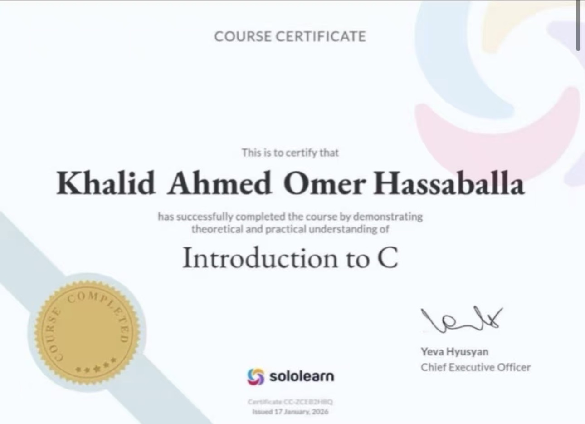

Engaging with runtime assessments on the HackerRank engine provided a highly structured environment for practicing strict problem-solving logic. The problem sets covered array transformations, variable definitions, customized algorithmic tasks, complex conditionals, and memory allocations. Standard processing routines require efficient solutions to prevent unexpected CPU thread usage timeouts during high-volume testing inputs.
My initial modules focused extensively on syntax checking rules, standard terminal input-output streams, and bitwise logic operations. Gradually, the platform introduced advanced challenges involving multidimensional structure sorting metrics, variable arguments, dynamic memory sizing commands via allocation primitives, and custom token parses. Dealing with pointer logic required precise code adjustments, as minor off-by-one errors instantly trigger system segmentation faults or memory leak traps.
Throughout these challenge sets, I structured functional solutions targeting optimal execution paths. Analyzing memory use overhead for structural nodes vs dynamic array layouts clarified underlying architecture performance trade-offs. Successfully passing all hidden compiler test variations validated structural execution safety, data parsing consistency, boundary evaluations, and low-level logical processing speed optimization.
Ultimately, complete problem-set milestones tracking across these competitive development modules served to solidify foundational programming competencies. The instant feedback pipeline from compiler platforms built strong habits of preemptively catching null pointer assignments, handling extreme edge inputs, checking buffer size margins, and writing cleanly refactored loop structures.
The modular instructional curriculum structured within the SoloLearn platform delivered an excellent step-by-step conceptual verification pipeline. This course tracked standard scalar variable setups, mathematical operations, loop controls, logic structures, localized function declarations, array maps, and pointer interactions. The interactive sandbox nature of this platform allowed for quick experimental testing of modular components alongside lesson modules.
Primary focus blocks targeted scope definitions, storage variables, macro preprocessor rules, and custom data wrappers like structural types and unions. Working through small-scale compilation challenges built a strong mental model of runtime stacks, memory address operations, and variable visibility boundaries across independent file blocks.
Additionally, the curriculum explored file input-output controls, enabling permanent data persistence to local files via read, write, and stream tracking buffers. Managing explicit system pointer actions during data streams reinforced the critical importance of manually closing opened file descriptors and validating target data pathways to prevent state corruptions.
Finishing the complete verification track provided comprehensive validation of core object paradigms, foundational execution logic, and compilation workflows. The balance of concept quizzes and sandbox challenges bridge the gap between high-level architectural ideas and granular execution rules, providing a strong foundation for future system engineering tasks.

Reflecting upon the comprehensive C programming course from last semester, the structural insights gained remain directly applicable across all facets of engineering development. Interfacing directly with memory locations, debugging manual resource allocations, and configuring pointer relationships removed abstract system assumptions. This foundational depth significantly eases the process of picking up modern web execution environments and application runtimes. Understanding memory management allows me to easily write highly optimized, clean, leak-free web code blocks, parse data formats securely, and manage server states efficiently. The logical discipline built through low-level systems programming continues to guide my technical choices, system structural layouts, and application optimization approaches today.